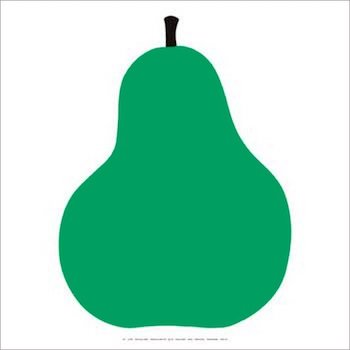

p5.js
家紋を作る課題では丸に三つ鱗を製作した。
２つの円を重ね土台にし、その上に２つの三角を重ね作成した。
コードには説明を書き誰が見てもわかるようにした。
自由課題ではエンツォ・マーリの緑の梨を作った。
原画がこちら

作成したのがこちら
丸の図形を組み合わせて全体像を作り上げ、削っていくやり方だ。
原画があまりにも曲線が多くてp5.jsで再現するのは難しい。
授業外でタッチデザイナーをいじってみた。難しそうだが時間があるときにやってみようと思う。